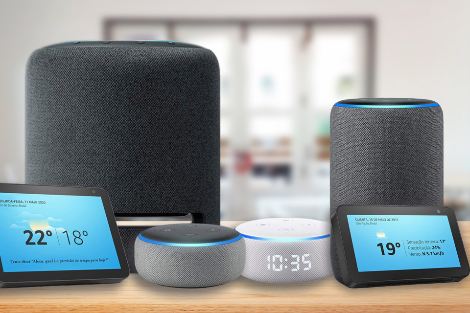

Profissionais no Brasil na área de IoT
O mundo em que precisávamos de um computador de mesa para ficarmos conectados já é passado e cada vez mais eletrônicos contam com acesso a internet. O motivo disso é a Internet das Coisas, uma das principais tendências para o mercado tecnológico.

Além de tornar a vida dos usuários mais conectada, o setor promete alavancar economicamente: segundo dados da Accenture extraídos do site Medium, espera-se que a indústria de IoT possa injetar na economia global, até 2030, US$ 14,2 trilhões. O Brasil não fica de fora dessa novidade, o estudo Índice de Inteligência Empresarial mostrou que o investimento de companhias brasileiras em novas tecnologias, em 2019, foi 45% maior que em 2018 , totalizando US$6,1 milhões.
Para a construção de sistema embarcado conectado a rede, as pessoas precisam de conhecimentos multidisciplinares para entender como manipular dados de acordo com o contexto do projeto, e levando a melhores tomadas de decisões. Isso implica possuir habilidades de programação, arquitetura de computadores, eletrônica embarcada, inteligência artificial, ciência de dados, física, computação e conhecimentos específicos de acordo com o projeto a ser desenvolvido, como biologia, geografia, medicina, agronomia, física, entre outros. A IoT é um campo multidisciplinar, são necessários conhecimentos em diversas áreas para a equipe projetar um sistema.
Desenvolvedor de plataforma
O papel do desenvolvedor de plataforma é integrar hardware (gadgets, dispositivos de hardware) e software, fazendo com que diferentes dispositivos se comuniquem usando um mesmo padrão e consigam compartilhar informações entre si. Muitas empresas utilizam ecossistemas próprios em seus produtos, como é o caso da Amazon Alexa, mas quem está interessado na área também pode treinar com soluções de código aberto, desenvolvendo em plataformas.
Desenvolvedor de Aplicativos
Além da plataforma que engloba todos os eletrônicos conectados, a
Internet
das Coisas demandará uma grande quantidade de desenvolvedores de aplicativos. O
trabalho do
profissional consiste em criar programas que permitem controlar dispositivos de hardware
remotamente por meio de smartphones e tablets, bem como receber informação destes e conceber
soluções voltadas para cada tipo de dispositivo.
Um exemplo desse trabalho seria as lâmpadas controladas por aplicativos onde é possível tanto
ligar e desligar, quanto controlar sua intensidade.
Especialista em Big Data

Outra área importante que está ligada com a Internet das Coisas é Big Data. À medida que produtos do dia a dia ganham conexão com a internet, cada vez mais dados são produzidos. Desse modo, os trabalhos envolvendo tratamento e gerenciamento de informação devem crescer exponencialmente com a popularização da IoT.
Como já acontece no mercado atual, o especialista em Big Data terá que trabalhar com sistemas, bancos de dados e ferramentas de administração e análise de dados. Além de ter conhecimento de técnicas como machine learning, o profissional deve ficar ligado em conceitos de segurança de informação e ética, afinal sua “matéria-prima” são os usuários.
Especialista em Segurança de Informação
Devido à grande quantidade de dispositivos captando dados e informações processadas em Big Data, é necessário ter alguém responsável por garantir que nada vai passar, e esse é o trabalho do especialista em segurança.
lém de atuar desenvolvendo sistemas para proteger dispositivos conectados e ecossistemas da Internet das Coisas, alguns profissionais desse segmento terão que lidar com fatores como privacidade, o que demanda conhecimento de questões legislativas e éticas; afinal, cometer deslizes com informações de clientes pode não ser nada bom para os negócios.
Se o foco é trabalhar na concepção de tecnologias de proteção para a Internet das Coisas, a dica é conhecer melhor as plataformas existentes e buscar conhecimentos específicos sobre vulnerabilidades e tendências de segurança que devem afetar os usuários nos próximos anos.
Especialista em Inteligência Artificial
Segundo a Intel, o mercado de IoT em 2025 irá movimentar um mercado
de $6,2
trilhões de dólares , e esse mercado exigirá profissionais com múltiplas
proficiências,
principalmente em inteligência artificial.